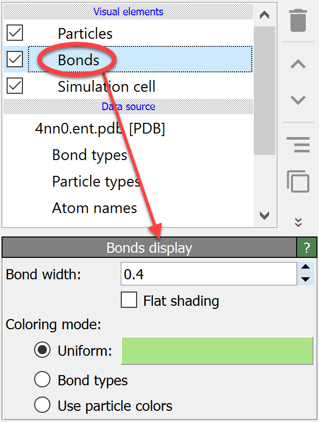

Bonds
{kind=link}
This visual element renders bonds between pairs of particles. Bonds are either loaded from the simulation file as part of the model or they can be created within OVITO by adding the Create bonds modifier to the data pipeline. Alternatively, the Voronoi analysis modifier is able to generate bonds between nearest neighbor particles without a distance criterion.
Parameters
- Bond width
Controls the width of bonds cylinders or lines (in simulation units of length). Ignored if per-bond diameter values have been assigned to the
Widthbond property.- Flat shading
Switches to a flat line representation instead of three-dimensional cylinders.
- Coloring mode
Selects how the colors of the bonds are determined. You can choose between (i) a uniform color used for all bonds, (ii) a colors reflecting each bond’s type, and (iii) adopting the colors from the particles connected by the bonds.
Hint
A fourth method of coloring the bonds is to assign explicit RGB color values to the
Colorproperty of the bonds. This approach gives you full control over the color of each individual bond. You can set theColorbond property using the Compute property or Color coding modifiers, for example.
See also
ovito.vis.BondsVis (Python API)